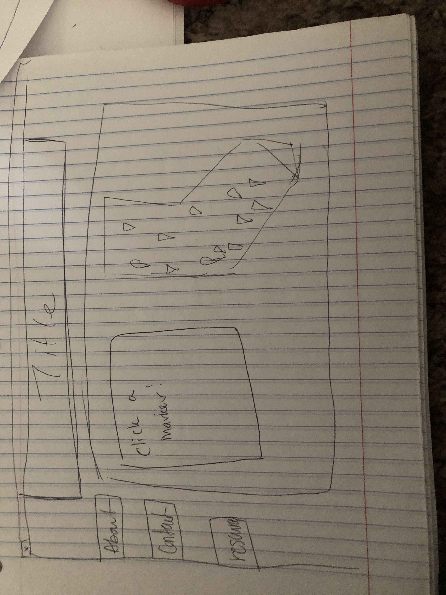
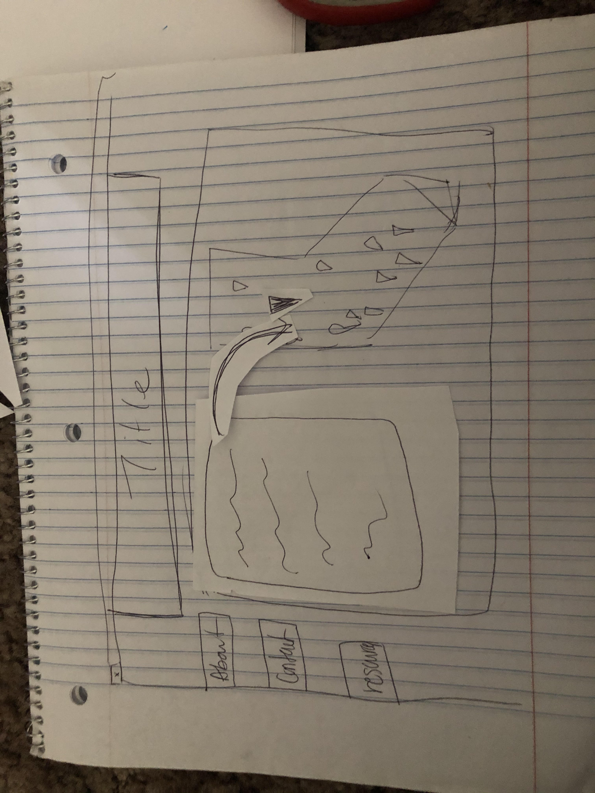
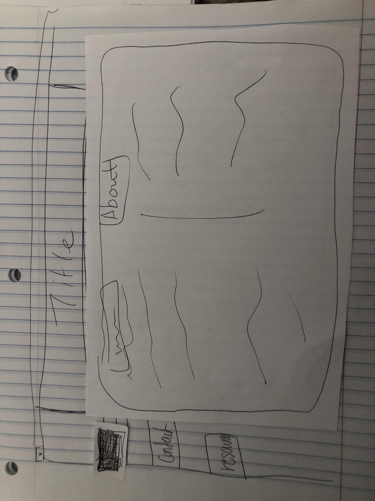
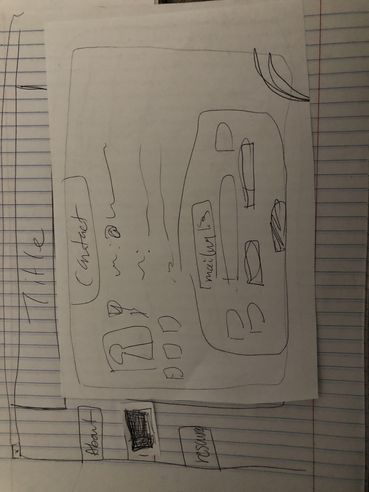
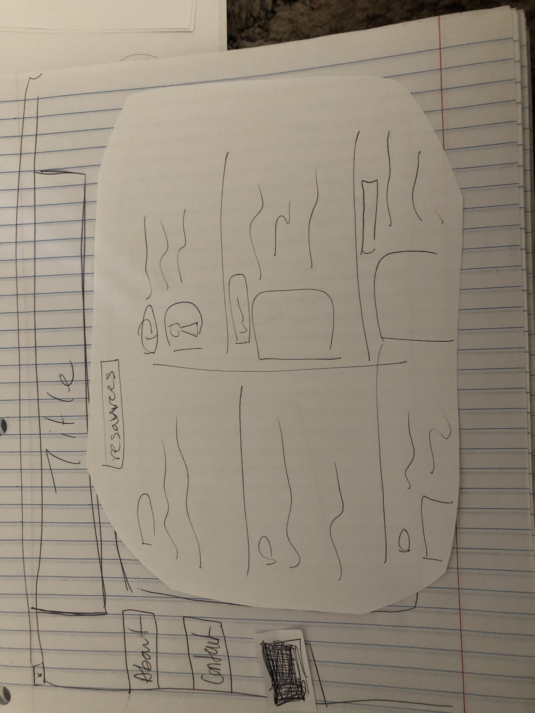

Really plain homescreen. Just want to have the map be the main feature and everything else like an explanation or information can be seen elsewhere. When a marker is clicked, it gets highlighted and the textbox changes to include the information I want to show related to the marker. The other tabs have are for other pages like about me, how to contact or recieve updates, and a page that has resources listed more plainly if people don't want to click around the page.



